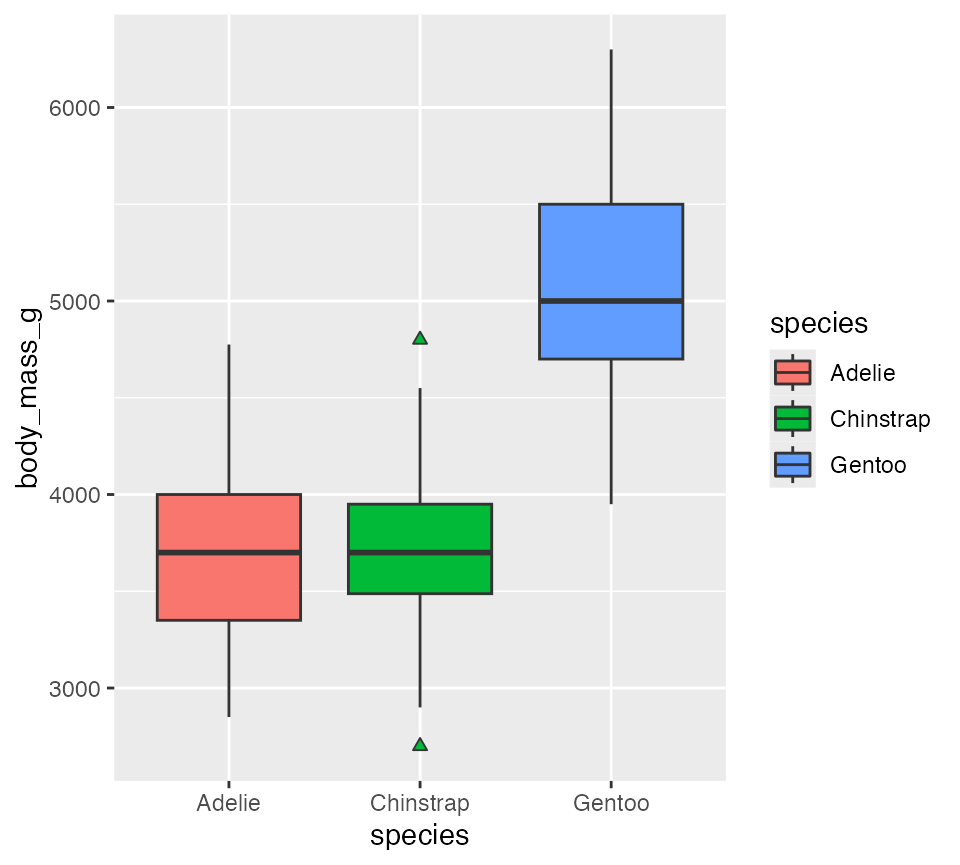
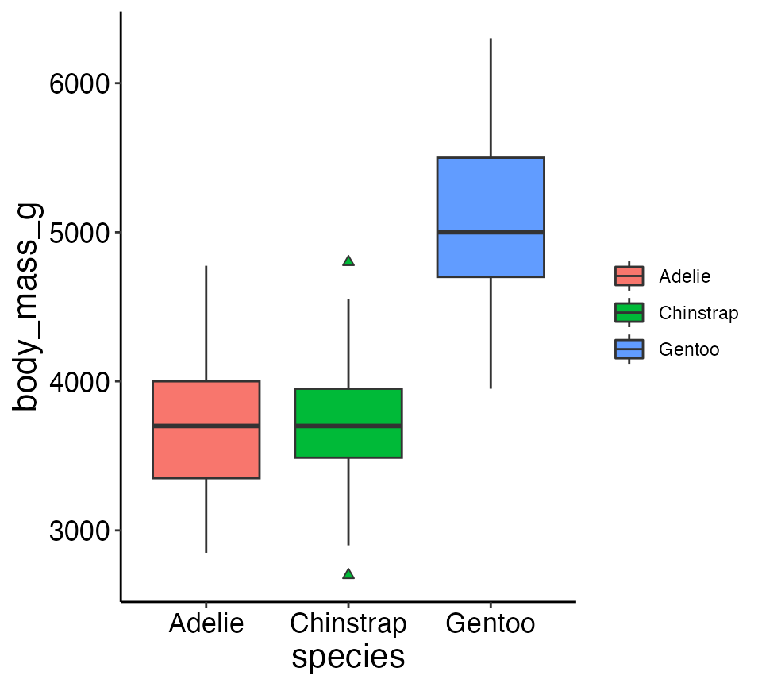
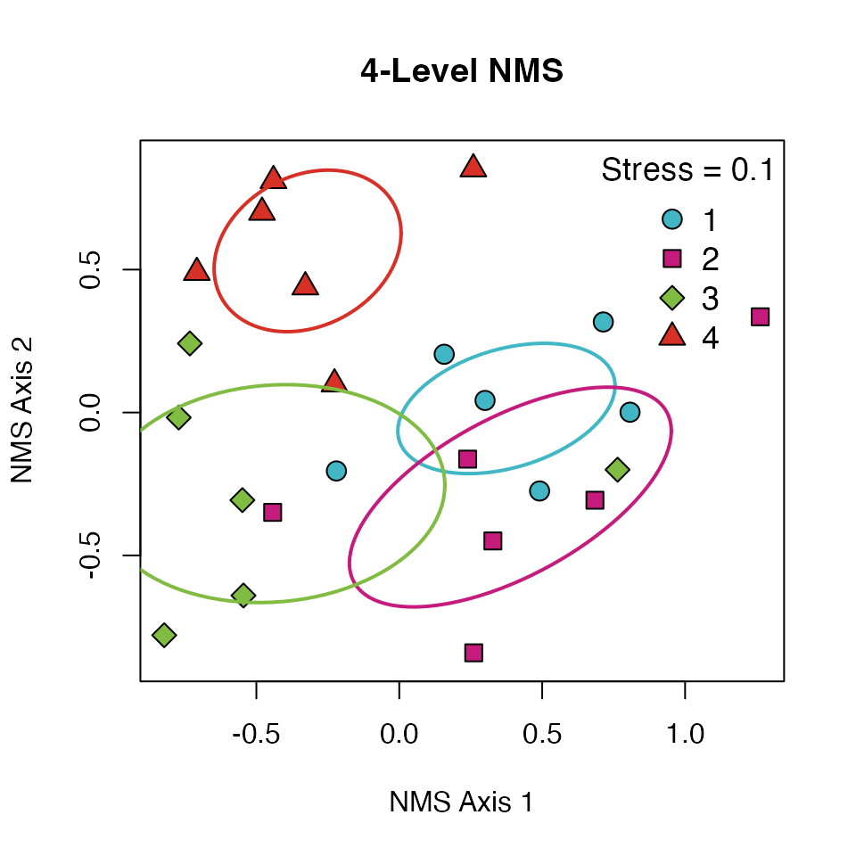

The supportR package is an amalgam of distinct functions
I’ve written to accomplish small data wrangling, quality control, or
visualization tasks. These functions tend to be short and
narrowly-defined. An additional consequence of the motivation for
creating them is that they tend to not be inter-related or united by a
common theme. If this vignette feels somewhat scattered because of that,
I hope it doesn’t negatively affect how informative it is or your
willingness to adopt supportR into your scripts!
This vignette describes the main functions of supportR
using the examples included in each function.
In order to demonstrate some of the data wrangling functions of
supportR, we’ll use some some example data from Dr. Allison Horst’s palmerpenguins
R package.
# Load library
library(palmerpenguins)
# Glimpse the penguins dataset
str(penguins)
#> tibble [344 × 8] (S3: tbl_df/tbl/data.frame)
#> $ species : Factor w/ 3 levels "Adelie","Chinstrap",..: 1 1 1 1 1 1 1 1 1 1 ...
#> $ island : Factor w/ 3 levels "Biscoe","Dream",..: 3 3 3 3 3 3 3 3 3 3 ...
#> $ bill_length_mm : num [1:344] 39.1 39.5 40.3 NA 36.7 39.3 38.9 39.2 34.1 42 ...
#> $ bill_depth_mm : num [1:344] 18.7 17.4 18 NA 19.3 20.6 17.8 19.6 18.1 20.2 ...
#> $ flipper_length_mm: int [1:344] 181 186 195 NA 193 190 181 195 193 190 ...
#> $ body_mass_g : int [1:344] 3750 3800 3250 NA 3450 3650 3625 4675 3475 4250 ...
#> $ sex : Factor w/ 2 levels "female","male": 2 1 1 NA 1 2 1 2 NA NA ...
#> $ year : int [1:344] 2007 2007 2007 2007 2007 2007 2007 2007 2007 2007 ...With that data loaded, we can use the summary_table
function to quickly get group-wise summaries and retrieve generally
useful summary statistics.
The groups argument supports a vector of all of the
column names to group by while response must be a single
numeric column. The drop_na argument allows group
combinations that result in an NA to be automatically dropped (i.e., if
a penguin didn’t have an island listed that would be dropped). The mean,
standard deviation (SD), sample size, and standard error (SE) are all
returned to facilitate easy figure creation. There is also a
round_digits argument that lets you specify how many digits
you’d like to retain for the mean, SD, and SE.
# Summarize the data
supportR::summary_table(data = penguins, groups = c("species", "island"),
response = "bill_length_mm", drop_na = T)
#> species island mean std_dev sample_size std_error
#> 1 Adelie Biscoe 38.98 2.48 44 0.37
#> 2 Adelie Dream 38.50 2.47 56 0.33
#> 3 Adelie Torgersen 38.95 3.03 52 0.42
#> 4 Chinstrap Dream 48.83 3.34 68 0.41
#> 5 Gentoo Biscoe 47.50 3.08 124 0.28crop_tri allows dropping one “triangle” of a symmetric
dataframe / matrix. It also includes a drop_diag argument
that accepts a logical for whether to drop the diagonal of the data
object. This is primarily useful (I find) in allowing piping through
this function as opposed to using the base R notation for removing a
triangle of a symmetric data object.
# Define a simple matrix wtih symmetric dimensions
mat <- matrix(data = c(1:2, 2:1), nrow = 2, ncol = 2)
# Crop off it's lower triangle
supportR::crop_tri(data = mat, drop_tri = "lower", drop_diag = FALSE)
#> [,1] [,2]
#> [1,] 1 2
#> [2,] NA 1
# Drop the diagonal as well
supportR::crop_tri(data = mat, drop_tri = "lower", drop_diag = TRUE)
#> [,1] [,2]
#> [1,] NA 2
#> [2,] NA NAarray_melt allows users to ‘melt’ an array of dimensions
X, Y, and Z into a dataframe containing columns “x”, “y”, “z”, and
“value” where “value” is whatever was stored at those coordinates in the
array.
# Make data to fill the array
vec1 <- c(5, 9, 3)
vec2 <- c(10:15)
# Create dimension names (x = col, y = row, z = which matrix)
x_vals <- c("Col_1","Col_2","Col_3")
y_vals <- c("Row_1","Row_2","Row_3")
z_vals <- c("Mat_1","Mat_2")
# Make an array from these components
g <- array(data = c(vec1, vec2), dim = c(3, 3, 2),
dimnames = list(x_vals, y_vals, z_vals))
# "Melt" the array into a dataframe
melted <- supportR::array_melt(array = g)
# Look at that top of that
head(melted)
#> z y x value
#> 1 Mat_1 Col_1 Row_1 5
#> 2 Mat_1 Col_1 Row_2 10
#> 3 Mat_1 Col_1 Row_3 13
#> 4 Mat_1 Col_2 Row_1 9
#> 5 Mat_1 Col_2 Row_2 11
#> 6 Mat_1 Col_2 Row_3 14In terms of quality control functions, diff_check
compares two vectors and reports back what is in the first but not the
second (i.e., what is “lost”) and what is in the second but not the
first (i.e., what is “gained”). I find this most useful (A) when
comparing the index columns of two data objects I intend to join
together and (B) to ensure no columns are unintentionally removed during
lengthy tidyverse-style pipes (%>%).
diff_check also includes optional logical arguments
sort and return that will respectively either
sort the difference in both vectors and return a two-element if set to
TRUE.
# Make two vectors
vec1 <- c("x", "a", "b")
vec2 <- c("y", "z", "a")
# Compare them!
supportR::diff_check(old = vec1, new = vec2, sort = TRUE, return = TRUE)
#> Following element(s) found in old object but not new:
#> [1] "b" "x"
#> Following element(s) found in new object but not old:
#> [1] "y" "z"
#> $lost
#> [1] "b" "x"
#>
#> $gained
#> [1] "y" "z"This package also includes the function num_check that
identifies all values of a column that would be coerced to
NA if as.numeric was run on the column. Once
these non-numbers are identified you can handle that in whatever way you
feel is most appropriate. num_check is intended only to
flag these for your attention, not to attempt a fix using a
method you may or may not support.
# Make a dataframe with non-numbers in a number column
fish <- data.frame('species' = c('salmon', 'bass', 'halibut', 'eel'),
'count' = c(1, '14x', '_23', 12))
# Use `num_check` to identify non-numbers
num_check(data = fish, col = "count")
#> For 'count', 2 non-numbers identified: '14x' | '_23'
#> $count
#> [1] "14x" "_23"date_check does a similar operation but is checking a
column for entries that would be coerced to NA by
as.Date instead. Note that if a date is sufficiently badly
formatted as.Date will throw an error instead of coercing
to NA so date_check will do the same
thing.
# Make a dataframe including malformed dates
sites <- data.frame('site' = c("LTR", "GIL", "PYN", "RIN"),
'visit' = c('2021-01-01', '2021-01-0w', '1990', '2020-10-xx'))
# Now we can use our function to identify bad dates
supportR::date_check(data = sites, col = 'visit')
#> For 'visit', 3 non-dates identified: '2021-01-0w' | '1990' | '2020-10-xx'
#> $visit
#> [1] "2021-01-0w" "1990" "2020-10-xx"Both num_check and date_check can accept
multiple column names to the col argument (as of version
1.1.1) and all columns are checked separately.
Another date column quality control function is
date_format_guess. This This function checks a column of
dates (stored as characters!) and tries to guess the format of the date
(i.e., month/day/year, day/month/year, etc.).
It can make a more informed guess if there is a grouping column because it can use the frequency of the “date” entries within those groups to guess whether a given number is the day or the month. This is based on the assumption that sampling occurs more often within months than across them so the number that occurs in more rows within the grouping values is most likely month.
Recognizing that assumption may be uncomfortable for some users, the
groups argument can be set to FALSE and it
will do the clearer judgment calls (i.e., if a number is >12 it is
day, etc.). Note that dates that cannot be guessed by my function will
return “FORMAT UNCERTAIN” so that you can handle them using your
knowledge of the system (or by returning to your raw data if need
be).
# Make a dataframe with dates in various formats and a grouping column
my_df <- data.frame('data_enterer' = c('person A', 'person B',
'person B', 'person B',
'person C', 'person D',
'person E', 'person F',
'person G'),
'bad_dates' = c('2022.13.08', '2021/2/02',
'2021/2/03', '2021/2/04',
'1899/1/15', '10-31-1901',
'26/11/1901', '08.11.2004',
'6/10/02'))
# Now we can invoke the function!
supportR::date_format_guess(data = my_df, date_col = "bad_dates",
group_col = "data_enterer", return = "dataframe")
#> Returning dataframe of data format guesses
#> data_enterer bad_dates format_guess
#> 1 person A 2022.13.08 year/day/month
#> 2 person B 2021/2/02 year/month/day
#> 3 person B 2021/2/03 year/month/day
#> 4 person B 2021/2/04 year/month/day
#> 5 person C 1899/1/15 year/month/day
#> 6 person D 10-31-1901 month/day/year
#> 7 person E 26/11/1901 day/month/year
#> 8 person F 08.11.2004 FORMAT UNCERTAIN
#> 9 person G 6/10/02 FORMAT UNCERTAIN
# If preferred, do it without groups and return a vector
supportR::date_format_guess(data = my_df, date_col = "bad_dates",
groups = FALSE, return = "vector")
#> Defining `groups` is strongly recommended! If none exist, consider adding a single artificial group shared by all rows then re-run this function
#> Returning vector of data format guesses
#> [1] "year/day/month" "FORMAT UNCERTAIN" "FORMAT UNCERTAIN" "FORMAT UNCERTAIN"
#> [5] "year/month/day" "month/day/year" "day/month/year" "FORMAT UNCERTAIN"
#> [9] "FORMAT UNCERTAIN"I’ve created a set of custom ggplot2 theme
elements to guarantee that all of my figures share similar aesthetics.
Feel free to use theme_lyon if you have similar
preferences!
theme_lyon does the following changes to a
ggplot2 plot:
# Load ggplot2
library(ggplot2)
# Create a plot and allow default ggplot themeing to be added
ggplot(penguins, aes(x = species, y = body_mass_g, fill = species)) +
geom_boxplot(outlier.shape = 24)
# Compare with the same plot with my theme
ggplot(penguins, aes(x = species, y = body_mass_g, fill = species)) +
geom_boxplot(outlier.shape = 24) +
supportR::theme_lyon()
I’ve also created nms_ord and pcoa_ord for
Non-Metric Multi-Dimensional Scaling (NMS) & Principal Coordinates
Analysis (PCoA) Ordinations respectively.
# Load data from the `vegan` package
utils::data("varespec", package = 'vegan')
resp <- varespec
# Make a columns to split the data into 4 groups
factor_4lvl <- c(rep.int("Trt_1", (nrow(resp)/4)),
rep.int("Trt_2", (nrow(resp)/4)),
rep.int("Trt_3", (nrow(resp)/4)),
rep.int("Trt_4", (nrow(resp)/4)))
# And combine them into a single data object
data <- cbind(factor_4lvl, resp)
# Actually perform multidimensional scaling
mds <- vegan::metaMDS(data[-1], autotransform = FALSE,
expand = FALSE, k = 2, try = 10)
# With the scaled object and original dataframe we can use this function
supportR::nms_ord(mod = mds, groupcol = data$factor_4lvl,
title = '4-Level NMS', leg_pos = 'topright',
leg_cont = c('1', '2', '3', '4'))
pcoa_ord has the same syntax as nms_ord but
it expects an object created by ape::pcoa rather than
vegan::metaMDS.
Finally, I’ve written several functions that allow you to interact with APIs outside of R via R functions with hopefully more comfortable syntax. Because these functions rely on user credentials, they cannot be run non-interactively (as in a CRAN submission) so the following code chunks are not evaluated and are included as examples of the proper syntax for your reference.
For GitHub users, I’ve developed two related functions:
github_ls and github_tree.
github_ls accepts the URL to a GitHub repository to which
you have access (public or private). It creates a dataframe of that
repository’s contents including their names, types, and full paths
within the repository. Listing of a particular folder and recursive
listing of all nested subfolders within a repository are both supported
via additional arguments.
If the folder argument is set to NULL (the
default) the top level of the repository is listed.
# List all files in a GitHub repository
supportR::github_ls(repo = "https://github.com/njlyon0/supportR",
recursive = TRUE, quiet = FALSE)
# Or list files in only a particular folder
supportR::github_ls(repo = "https://github.com/njlyon0/supportR", folder = "R",
recursive = FALSE, quiet = TRUE)github_tree is an extension of github_ls
that identifies all files in a repository and creates a file tree
diagram of that folder structure that is simple and human-readable.
Unlike github_ls, github_tree only supports
recursive identification of all files beginning at the top level of the
repository. It does however allow users to exclude the listings of
particular folders by specifying their names in the exclude
argument.
I think this could be particularly useful to embed in a repository’s
README.Rmd to create a quick-and-easy file map for visitors
to use as a guide in navigating the repository’s contents.
# Create a file tree diagram of a GitHub repository
supportR::github_tree(repo = repo = "https://github.com/njlyon0/supportR",
exclude = c("docs", "man", ".github"), quiet = FALSE)For users who create RMarkdown reports and want to store them in a
Google Drive folder, rmd_export knits and exports a given R
Markdown file both locally and to a user-designated Google Drive folder.
Note that you MUST authenticate your R session
with the googledrive package so that it has permission to
access the Drive folder you supply. I recommend running
googledrive::drive_auth() and doing the authentication
“dance” in a browser before using rmd_export to reduce the
chances of any errors.
# Authorize R to interact with GoogleDrive
googledrive::drive_auth()
# Use `rmd_export()` to knit and export an .Rmd file
supportR::rmd_export(rmd = "my_markdown.Rmd",
in_path = file.path("Folder in my WD with the .Rmd named in `rmd`"),
out_path = file.path("Folder in my WD to save the knit file to"),
out_name = "desired name for output",
out_type = "html",
drive_link = "<Full Google Drive link>")